Подборку собрали 19 октября, прошедшие события скрыты. Свежая афиша — на главной
31 октября, суббота
Хэллоуин 2026 в Москве: куда сходить
В 2026 году Хэллоуин выпадает на субботу. Мы собрали 46 планов с подходящей атмосферой и 37 мест — например, «Коломенское», «Музей Булгакова» и «Бункер-42». В афише с 30 октября по 1 ноября — 46 событий, среди них 14 спектаклей, 8 концертов и 8 вечеринок. Тематические — в начале списка. Зови игрой на свидание или собери компанию голосованием.
- 46 планов
- 37 мест
- 46 событий
События 30 октября — 1 ноября 40 из 46
16 Тонн · м. Улица 1905 года · 4 000–5 000 ₽ · 18+
Костюмированный бал две ночи подряд: киберпанк на одном этаже, готика и вампиры на другом. 30-го играет «Саботаж», 31-го — Toozy Tunes, в костюме вход свободный.
Подробнее: Halloween. Бал удивительных существ. Vol 5Позвать сюда: Halloween. Бал удивительных существ. Vol 5Билеты : Halloween. Бал удивительных существ. Vol 5 (страница с билетами, откроется в новой вкладке)
Урбан · м. Дмитровская · от 1 100 ₽ · 18+
Хэллоуин в стиле «Сумерек»: туман, свечи и лес Форкса в клубе, а в плейлисте — хиты нулевых от t.A.T.u. до Linkin Park. Ночь ностальгии в костюмах.
Подробнее: Halloween x Сумерки by Молодость простит!Позвать сюда: Halloween x Сумерки by Молодость простит!Билеты : Halloween x Сумерки by Молодость простит! (страница с билетами, откроется в новой вкладке)
Мосспектакль · м. Курская · от 8 000 ₽ · 18+
Иммерсивный ужин-спектакль по Гоголю в особняке XIX века: фуршет под рояль, потом страшно-смешная история, где ты участник. 30 октября начало в 21:00.
Подробнее: ВийПозвать сюда: ВийБилеты : Вий (страница с билетами, откроется в новой вкладке)
Glastonberry · м. Дубровка · 1 800–3 500 ₽ · 12+
Фолк-фестиваль с 25-летней историей на хэллоуинские выходные: 18 групп на двух сценах, ярмарка мастеров и публика в карнавальных костюмах.
Подробнее: Самайн 2026Позвать сюда: Самайн 2026Билеты : Самайн 2026 (страница с билетами, откроется в новой вкладке)
Китайский лётчик Джао Да · м. Китай-город · от 1 500 ₽ · 16+
Шесть часов хоррор-панка в клубе у Китай-города: четыре группы, грим, костюмы и тематический декор. Для тех, кому Хэллоуин нужен погромче.
Подробнее: Horror Punk HalloweenПозвать сюда: Horror Punk HalloweenБилеты : Horror Punk Halloween (страница с билетами, откроется в новой вкладке)
Дом музыки · м. Павелецкая · 800–3 000 ₽ · 6+
Британский джазовый вокалист с московскими музыкантами поёт Эллингтона, включая редко звучащие вещи. Два сета — спокойная альтернатива Хэллоуину.
Подробнее: Кливленд Уоткисс. Хиты Эллингтона и МонкаПозвать сюда: Кливленд Уоткисс. Хиты Эллингтона и МонкаБилеты : Кливленд Уоткисс. Хиты Эллингтона и Монка (страница с билетами, откроется в новой вкладке)
Фото: Nevermind2, общественное достояние · Wikimedia Commons
Музей-театр «Булгаковский дом» · м. Маяковская · от 4 500 ₽ · 12+
Вечер в доме, где жил Булгаков: сначала фильм, потом страшные истории в полумраке. Два с половиной часа мистики — уютно и немного жутко.
Подробнее: Страшилки на ночь. HalloweenПозвать сюда: Страшилки на ночь. HalloweenБилеты : Страшилки на ночь. Halloween (страница с билетами, откроется в новой вкладке)
16 Тонн · м. Улица 1905 года · от 1 800 ₽ · 16+
Хэллоуинский карнавал-рейв: Muse, Oasis, Green Day и Nirvana в ироничных русских переводах. Приходи в костюме и пой со всеми.
Подробнее: The TranslatorsПозвать сюда: The TranslatorsБилеты : The Translators (страница с билетами, откроется в новой вкладке)
Смена 2.0 · м. Марксистская · от 1 200 ₽ · 18+
Электронная хэллоуинская ночь у Таганки: костюмы, танцы и клубная атмосфера. Недорогой вход для компании, которая хочет потанцевать.
Подробнее: Halloween в «Смене 2.0»Позвать сюда: Halloween в «Смене 2.0»Билеты : Halloween в «Смене 2.0» (страница с билетами, откроется в новой вкладке)
TAU · м. Стахановская · от 1 090 ₽ · 18+
Ночная хэллоуинская вечеринка с диджеями и живыми выступлениями, фотозоной и тематическим гримом. На входе дресс-код и фейс-контроль.
Подробнее: Saint-Moscow HalloweenПозвать сюда: Saint-Moscow HalloweenБилеты : Saint-Moscow Halloween (страница с билетами, откроется в новой вкладке)
Свобода · м. Аэропорт · 18+
Мультифандомная хэллоуинская ночь: косплееры, шоу на сцене, лазеры, конкурсы и дэнс-батл. Костюм не обязателен, нужен документ с фото.
Подробнее: Big Halloween NightПозвать сюда: Big Halloween NightБилеты : Big Halloween Night (страница с билетами, откроется в новой вкладке)
ЦСКА Арена · м. ЗИЛ · от 2 500 ₽ · 16+
Песни «Короля и Шута» с оркестром и хором прямо в Хэллоуин. Два сеанса — в 14:00 и в 19:00, на танцпол пускают с 16 лет.
Подробнее: Панк-сказка «Король и Шут»Позвать сюда: Панк-сказка «Король и Шут»Билеты : Панк-сказка «Король и Шут» (страница с билетами, откроется в новой вкладке)
Glastonberry · м. Дубровка · от 1 500 ₽ · 18+
Костюмная ночь, которая стартует ровно в полночь: рок-н-ролльные хиты вживую, гримёры, конкурс костюмов и фокусник. Танцпол на 700 человек.
Подробнее: Halloween Cosplay Night PartyПозвать сюда: Halloween Cosplay Night PartyБилеты : Halloween Cosplay Night Party (страница с билетами, откроется в новой вкладке)
МТС Live Холл · м. Площадь Ильича · 3 200–25 000 ₽ · 16+
Хэллоуинский фест на один день: 15 артистов новой волны, среди них Дора и THRILL PILL, плюс секретный гость. Приходи в образе.
Подробнее: Halloween FestПозвать сюда: Halloween FestБилеты : Halloween Fest (страница с билетами, откроется в новой вкладке)
Atmosphere · м. Москва-Сити · 2 350–12 050 ₽ · 16+
Осенний сольник одного из главных лиц нового русского хип-хопа. Старт уже в 17:00 — на вход бывает очередь, так что выходи с запасом.
Подробнее: Big Baby TapeПозвать сюда: Big Baby TapeБилеты : Big Baby Tape (страница с билетами, откроется в новой вкладке)
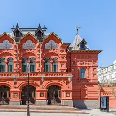
Театр Наций, Основная сцена · м. Чеховская · 18+
Главная премьера осени: Шолохов глазами китайского мастера Моу Сэня и режиссёра Мурата Абулкатинова. Пять часов с двумя антрактами, начало в 18:00.
Подробнее: Тихий ДонПозвать сюда: Тихий ДонБилеты : Тихий Дон (страница с билетами, откроется в новой вкладке)
Фото: Mike1979 Russia, CC BY-SA 3.0 · Wikimedia Commons
Театр Российской армии, Большая сцена · м. Достоевская · 5 000–44 000 ₽ · 6+
Юбилейная серия сольных концертов: знаменитые песни, новые вещи и разговор с залом о жизни. Вечеров много — до 8 ноября, можно выбрать удобный.
Подробнее: Александр РозенбаумПозвать сюда: Александр РозенбаумБилеты : Александр Розенбаум (страница с билетами, откроется в новой вкладке)
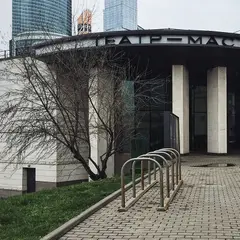
Мастерская Петра Фоменко, Новая сцена · м. Москва-Сити
Премьера Ивана Поповски по Достоевскому: фантасмагория о Фоме Опискине, подмявшем под себя целое имение. Больше четырёх часов с антрактом.
Подробнее: Село Степанчиково и его обитателиПозвать сюда: Село Степанчиково и его обитателиБилеты : Село Степанчиково и его обитатели (страница с билетами, откроется в новой вкладке)
Фото: Gennady Grachev from Moscow, Russia, CC BY 2.0 · Wikimedia Commons
Клуб Алексея Козлова · м. Китай-город · от 2 500 ₽ · 12+
Джаз-рок «Арсенала», который Алексей Козлов основал ещё в 1973-м, по пятницам — с Анной Королёвой на вокале и саксофоне. Ужин и живая музыка.
Подробнее: Анна Королёва и «Арсенал» Алексея КозловаПозвать сюда: Анна Королёва и «Арсенал» Алексея КозловаБилеты : Анна Королёва и «Арсенал» Алексея Козлова (страница с билетами, откроется в новой вкладке)
TAU · м. Стахановская · от 3 000 ₽ · 16+
Клубная версия большого шоу «Кино»: Каспарян, Титов и Тихомиров играют вживую под голос Цоя. Знакомые песни в небольшом зале.
Подробнее: Группа «Кино»Позвать сюда: Группа «Кино»Билеты : Группа «Кино» (страница с билетами, откроется в новой вкладке)
Стендап клуб на Трубной, Большой зал · м. Трубная · от 1 200 ₽ · 18+
Ночной формат для тех, кто не обижается: ведущий и четыре комика без цензуры и запретных тем. Идёт по пятницам и субботам в 23:00.
Подробнее: Жёсткий стендапПозвать сюда: Жёсткий стендапБилеты : Жёсткий стендап (страница с билетами, откроется в новой вкладке)
STILL, Большой зал · м. Чистые пруды · от 2 500 ₽ · 18+
Формат без ведущего: на сцену по очереди выходят пять хедлайнеров, и лайнап каждый раз другой. Сеансы в 16:00, 19:00 или 21:30 — смотри по дате.
Подробнее: 5 хедлайнеров за 2500₽Позвать сюда: 5 хедлайнеров за 2500₽Билеты : 5 хедлайнеров за 2500₽ (страница с билетами, откроется в новой вкладке)
Гастротеатр «Калейдоскоп» · м. Охотный ряд · 18 000–25 000 ₽ · 12+
Гастрошоу у Манежной: два часа путешествия от пирамид Гизы до садов Семирамиды, к каждому чуду — свой сет. Вариант для особого свидания.
Подробнее: 7 чудес светаПозвать сюда: 7 чудес светаБилеты : 7 чудес света (страница с билетами, откроется в новой вкладке)
Фото: A.Savin, CC BY-SA 3.0 · Wikimedia Commons
Стендап клуб на Трубной, Большой зал · м. Трубная · 950–1 500 ₽ · 18+
Фирменный вечер клуба: опытные комики с обкатанным материалом. Показы почти каждый день, по пятницам и субботам — в 19:00 и 21:00.
Подробнее: Биг стендапПозвать сюда: Биг стендапБилеты : Биг стендап (страница с билетами, откроется в новой вкладке)
Театр эстрады · м. Кропоткинская · 1 800–20 000 ₽ · 16+
Мюзикл Михаила Миронова на песнях Александра Розенбаума — история длиною в жизнь. Играют почти каждый день до 29 ноября, в выходные дважды.
Подробнее: Вальс-бостонПозвать сюда: Вальс-бостонБилеты : Вальс-бостон (страница с билетами, откроется в новой вкладке)
Фото: ATI1999, CC BY-SA 4.0 · Wikimedia Commons
Иммерсивный театр «Морфеус» · м. Павелецкая · 3 900–4 900 ₽ · 16+
Иммерсивная комедия с закрытыми глазами: семь зрителей попадают в Москву 1903 года с театральными интригами и кафе. Полтора часа, несколько сеансов в день.
Подробнее: Поезд, Чехов, два орлаПозвать сюда: Поезд, Чехов, два орлаБилеты : Поезд, Чехов, два орла (страница с билетами, откроется в новой вкладке)
Театр на Цветном · м. Трубная · 1 500–7 700 ₽ · 12+
Продолжение комедии «Мамма мимо!»: провинциальной труппе дают сутки на авангардного «Призрака оперы». Пародии на хиты и много смеха.
Подробнее: Призрак мюзикла, или Что опять не так?Позвать сюда: Призрак мюзикла, или Что опять не так?Билеты : Призрак мюзикла, или Что опять не так? (страница с билетами, откроется в новой вкладке)
STILL, Большой зал · м. Чистые пруды · от 1 080 ₽ · 18+
Вечер в двух актах: сначала живой джаз, затем стендап от трёх комиков, каждый раз в новом составе. В пятницу начинают в 21:30, в другие дни — в 18:30.
Подробнее: Стендап + джаз: два концерта в один вечерПозвать сюда: Стендап + джаз: два концерта в один вечерБилеты : Стендап + джаз: два концерта в один вечер (страница с билетами, откроется в новой вкладке)
ВТБ Арена · м. Динамо
Матч РПЛ на «ВТБ Арене»: «Динамо» — «Ахмат». Не дерби, поэтому с билетами обычно проще — удобно собраться компанией и поболеть.
Подробнее: Динамо — АхматПозвать сюда: Динамо — АхматБилеты : Динамо — Ахмат (страница с билетами, откроется в новой вкладке)
Театр Вахтангова, Основная сцена · м. Смоленская · 1 300–12 500 ₽ · 16+
Моцарт и Сальери у Анатолия Шульева: спектакль о природе таланта и о любви к чужому дару, на которую нет ответа. 2 ч 50 мин с антрактом.
Подробнее: АмадейПозвать сюда: АмадейБилеты : Амадей (страница с билетами, откроется в новой вкладке)
Фото: A.Savin, Free Art License · Wikimedia Commons
Театр «Современник» · м. Чистые пруды · 16+
Спектакль на двоих: Юрий Чурсин и Татьяна Бабенкова играют пьесу Гибсона о людях, которым трудно быть вместе. Тихо, честно и очень близко.
Подробнее: Двое на качеляхПозвать сюда: Двое на качеляхБилеты : Двое на качелях (страница с билетами, откроется в новой вкладке)
Театр Моссовета, Основная сцена · м. Маяковская · 500–5 000 ₽ · 12+
Музыкальный спектакль по рок-опере Уэббера и Райса идёт в Театре Моссовета с 1990 года — один из самых долгоживущих хитов Москвы. 2,5 часа с антрактом.
Подробнее: Иисус Христос — суперзвездаПозвать сюда: Иисус Христос — суперзвездаБилеты : Иисус Христос — суперзвезда (страница с билетами, откроется в новой вкладке)
Мастерская Петра Фоменко, Новая сцена · м. Москва-Сити
Летняя премьера Евгения Каменьковича: пьеса Ростана как одно большое признание в любви. Три с половиной часа с антрактом на Новой сцене.
Подробнее: Сирано де БержеракПозвать сюда: Сирано де БержеракБилеты : Сирано де Бержерак (страница с билетами, откроется в новой вкладке)
Фото: Gennady Grachev from Moscow, Russia, CC BY 2.0 · Wikimedia Commons
РАМТ, Большая сцена · м. Охотный ряд · 18+
Роман Дэниела Киза в постановке Юрия Грымова: эксперимент превращает простодушного Чарли в гения и заставляет спросить, что важнее ума.
Подробнее: Цветы для ЭлджернонаПозвать сюда: Цветы для ЭлджернонаБилеты : Цветы для Элджернона (страница с билетами, откроется в новой вкладке)
Live Арена · Сколково (МЦД-1) · от 2 300 ₽ · 18+
Comedy Club празднует 20 лет на сцене: Харламов, Батрутдинов, Карибидис и другие резиденты с новыми и лучшими номерами. Субботний вечер для большой компании.
Подробнее: Comedy Club. Большой концерт. Новое и лучшееПозвать сюда: Comedy Club. Большой концерт. Новое и лучшееБилеты : Comedy Club. Большой концерт. Новое и лучшее (страница с билетами, откроется в новой вкладке)
Арена Химки · м. Ховрино
В субботу вечером «Родина» принимает «Краснодар» на «Арене Химки». После игры можно всей компанией обсудить матч в баре неподалёку.
Подробнее: Родина — КраснодарПозвать сюда: Родина — КраснодарБилеты : Родина — Краснодар (страница с билетами, откроется в новой вкладке)
VK Stadium · м. Сокол · 4 500–18 000 ₽ · 18+
Drum&bass-шоу Радио Рекорд по мотивам скандинавских мифов: декорации, воздушные номера, пиротехника и сеты Kashin, Saint Rider, Gvozd и других.
Подробнее: Пиратская станция. РагнарёкПозвать сюда: Пиратская станция. РагнарёкБилеты : Пиратская станция. Рагнарёк (страница с билетами, откроется в новой вкладке)
Perepel · м. Цветной бульвар · от 950 ₽ · 18+
Лото на песнях: отмечаешь в карточке играющие треки от 90-х до новинок, подпеваешь и борешься за призы. 31 октября начало в 17:00.
Подробнее: Музыкальное лото с караокеПозвать сюда: Музыкальное лото с караокеБилеты : Музыкальное лото с караоке (страница с билетами, откроется в новой вкладке)
Навка Арена · м. Терехово · от 4 000 ₽
Ледовый спектакль по Пушкину под музыку Чайковского — мировая премьера Navka Show. Германа играет Никита Кацалапов, Томского — Алексей Ягудин; всего восемь вечеров.
Подробнее: Пиковая дама. Ледовый спектакль Татьяны НавкиПозвать сюда: Пиковая дама. Ледовый спектакль Татьяны НавкиБилеты : Пиковая дама. Ледовый спектакль Татьяны Навки (страница с билетами, откроется в новой вкладке)
StandUp Cafe, Большой зал · м. Чистые пруды · от 2 500 ₽ · 18+
Хетаг Хугаев строит шутки на каламбурах и внезапных поворотах в историях. Сольник около 90 минут; старт в 19:00 или 21:30 — зависит от дня.
Подробнее: Хетаг Хугаев. Сольный концертПозвать сюда: Хетаг Хугаев. Сольный концертБилеты : Хетаг Хугаев. Сольный концерт (страница с билетами, откроется в новой вкладке)


Планы с атмосферой 24 из 46
- Ростокинский акведук · Акведук XVIII века · м. ВДНХ
- 12 минут пешкомИнкубо · Квест с актёрами
В сумерках пройти вдоль каменного Ростокинского акведука 1780-х, а потом хоррор в «Инкубо» — «Пожиратель душ» или неоновая «Ночь в Токио» с сильными актёрами.
Открыть план: Акведук в сумерках и хоррор-квестПозвать сюда: Акведук в сумерках и хоррор-квест
Фото: Dmitry Ivanov., CC BY-SA 4.0 · Wikimedia Commons
- Усадьба Люблино · Усадьба · м. Волжская
- 6 минут пешкомБлэквуд · Квест-перформанс
Сумеречная прогулка у дворца-ротонды в Люблине, а потом перформанс «Блэквуд»: старое поместье, учтивый дворецкий и выбор, у которого нет правильного ответа.
Открыть план: Усадьба Люблино и поместье БлэквудПозвать сюда: Усадьба Люблино и поместье Блэквуд
Фото: NVO, CC BY 3.0 · Wikimedia Commons
- Усадьба Измайлово · Музей-усадьба · м. Партизанская
- 12 минут пешкомImmerscape · Квест с актёрами
Прогулка по острову усадьбы Измайлово мимо Покровского собора, а потом «Запретная дверь» в Immerscape: актрисы играют с порога и выручают, если совсем страшно.
Открыть план: Царский остров и «Запретная дверь»Позвать сюда: Царский остров и «Запретная дверь»
Фото: NVO, CC BY 3.0 · Wikimedia Commons
- Музей Булгакова · Музей · м. Маяковская
- 8 минут пешкомPinch · Ресторан
Сначала «Нехорошая квартира» в Музее Булгакова, а потом восемь минут пешком до Pinch у Патриарших: завтраки там подают до 16:00, так что бранч получится в самый раз.
Открыть план: Булгаков и поздний бранчПозвать сюда: Булгаков и поздний бранч
Фото: Usolt, CC BY 3.0 · Wikimedia Commons
- Музей Булгакова · Музей · м. Маяковская
- 8 минут пешкомЗойка · Ресторан
«Нехорошая квартира» №50 в музее Булгакова (по четвергам открыт до 21:00), а потом ужин в «Зойкиной квартире» на Патриарших, где остановилось время.
Открыть план: Булгаковский вечерПозвать сюда: Булгаковский вечер
Фото: Usolt, CC BY 3.0 · Wikimedia Commons
- Чистые пруды · Бульвар и пруд · м. Чистые пруды
- 12 минут пешкомKeep · Гастробар
Круг по Чистым прудам в сумерках, потом свечи и росписи с ангелами в готическом гастробаре Keep во дворах Мясницкой.
Открыть план: Бульвары и готический ужинПозвать сюда: Бульвары и готический ужин
Фото: Vasilii Martynov, CC BY-SA 4.0 · Wikimedia Commons
- Бункер-42 · Музей и ресторан под землёй · м. Таганская
- 9 минут пешкомRestaurant by Deep Fried Friends · Ресторан-бар
Экскурсия в секретный бункер холодной войны на глубине 65 метров, а потом бистро и коктейльный паб в Deep Fried Friends в девяти минутах пешком.
Открыть план: Бункер холодной войныПозвать сюда: Бункер холодной войны
Фото: Fastboy, CC BY-SA 3.0 · Wikimedia Commons
- Дом Гоголя · Музей · м. Арбатская
- 4 минуты пешкомХудожественный · Кинотеатр
Дом, где Гоголь сжёг второй том «Мёртвых душ», и вечерний сеанс в старейшем кинотеатре Москвы.
Открыть план: Вий, Гоголь и киноПозвать сюда: Вий, Гоголь и кино
Фото: Shakko, CC BY-SA 4.0 · Wikimedia Commons
- Дом Гоголя · Музей · м. Арбатская
- 7 минут пешкомNiki Piano Bar · Ресторан с живым роялем
Дом, где Гоголь сжёг второй том «Мёртвых душ», а вечером — ужин под живой рояль.
Открыть план: Гоголь и живой рояльПозвать сюда: Гоголь и живой рояль
Фото: Shakko, CC BY-SA 4.0 · Wikimedia Commons
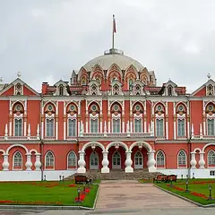
- Петровский путевой дворец · Дворец · м. Петровский парк
- 19 минут пешкомBrunchy Brunch · Арт-бистро
Краснокирпичный дворец в псевдоготике у «Динамо» (внутрь только с экскурсией), а потом завтраки весь день и выставки молодых художников в Brunchy, 19 минут пешком.
Открыть план: Готический дворец и бранчПозвать сюда: Готический дворец и бранч
Фото: WM wm WM, CC BY-SA 4.0 · Wikimedia Commons
- Петровский путевой дворец · Дворец · м. Петровский парк
- 12 минут пешкомClaudia · Средиземноморский ресторан
Краснокирпичный дворец с башнями, как из готического романа, а потом средиземноморский ужин у ЦСКА. Внутрь дворца — только с экскурсией по записи.
Открыть план: Готический дворец и ужинПозвать сюда: Готический дворец и ужин
Фото: WM wm WM, CC BY-SA 4.0 · Wikimedia Commons
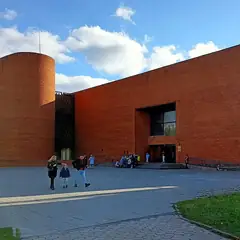
- Палеонтологический музей · Музей · м. Тёплый Стан
- 11 минут пешкомColizeum Тёплый Стан · Компьютерный клуб
Скелеты динозавров в Палеонтологическом музее, а через 11 минут пешком компы Colizeum у самого выхода из «Тёплого Стана».
Открыть план: Динозавры и катка в Тёплом СтанеПозвать сюда: Динозавры и катка в Тёплом Стане
Фото: MikSed, CC BY-SA 4.0 · Wikimedia Commons
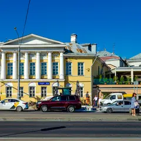
- KGallery Bookcafe · Книжный и кофейня в усадьбе · м. Китай-город
- 1 минута пешкомКабаре «Шум» · Кабаре
Кофе и альбомы по искусству в KGallery, а потом там же, в усадьбе Филипповых, — петербургское кабаре «Шум» с чтениями под баян и спектаклями.
Открыть план: Кабаре и книжный в усадьбеПозвать сюда: Кабаре и книжный в усадьбе
Фото: Никонико962, CC BY-SA 4.0 · Wikimedia Commons
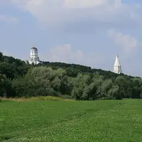
- Коломенское · Музей-заповедник · м. Коломенская
- 19 минут пешкомF5 Коломенская · Компьютерный клуб
Холмы над рекой, белая церковь Вознесения и деревянный дворец царя Алексея Михайловича, а ближе к вечеру катки в F5 у «Коломенской», 19 минут пешком.
Открыть план: Коломенское и F5Позвать сюда: Коломенское и F5
Фото: Ludvig14, CC BY-SA 4.0 · Wikimedia Commons
- Крутицкое подворье · Ансамбль XVII века · м. Пролетарская
- дальше на метро или таксиИнтеллигенция 2.0 · Кафе с верандой
Изразцовый теремок и тихие дворики XVII века, когда темнеет, потом одна станция на метро от «Пролетарской» до «Таганской» — и ужин в «Интеллигенции 2.0» с видом на храм.
Открыть план: Крутицы в сумеркахПозвать сюда: Крутицы в сумерках
Фото: Дмитрий Мозжухин, CC BY 3.0 · Wikimedia Commons
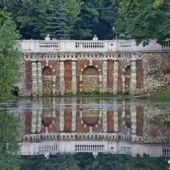
- Лефортовский парк · Парк · м. Лефортово
- 8 минут пешкомЧеловек и пароход · Кофейня
Старинный парк с прудами и гротом и кофейня «Человек и пароход».
Открыть план: Лефортово и пароходПозвать сюда: Лефортово и пароход
Фото: A.Savin, CC BY-SA 3.0 · Wikimedia Commons
- Новодевичий монастырь · Монастырь · м. Спортивная
- 5 минут пешкомНоводевичье кладбище · Некрополь
Стены Новодевичьего над прудом, потом тихий некрополь с надгробиями Гоголя, Булгакова и Чехова.
Открыть план: Монастырь и некропольПозвать сюда: Монастырь и некрополь
Фото: Ivtorov, CC BY-SA 4.0 · Wikimedia Commons
- Музей Булгакова · Музей · м. Маяковская
- 6 минут пешкомCopen 57 · Датский ресторан
Музей Булгакова, прогулка мимо Патриарших и поздний обед в крошечном датском ресторане на тридцать мест.
Открыть план: Нехорошая квартира и датская кухняПозвать сюда: Нехорошая квартира и датская кухня
Фото: Usolt, CC BY 3.0 · Wikimedia Commons
- Музей Булгакова · Музей · м. Маяковская
- 7 минут пешкомПатриаршие пруды · Пруд и сквер
- 5 минут пешкомPinch · Ресторан
«Нехорошая квартира» №50 в Музее Булгакова, потом круг у Патриарших прудов из «Мастера и Маргариты» и поздний завтрак в Pinch — их там подают до 16:00.
Открыть план: Нехорошая квартира и ПатрикиПозвать сюда: Нехорошая квартира и Патрики
Фото: Usolt, CC BY 3.0 · Wikimedia Commons
- Собор Непорочного Зачатия · Собор · м. Улица 1905 года
- 8 минут пешкомLao Lee · Вьетнамское кафе
Неоготический собор и вечерний органный концерт, потом горячий фо во вьетнамском кафе рядом.
Открыть план: Орган в неоготике и фоПозвать сюда: Орган в неоготике и фо
Фото: A.Savin, Free Art License · Wikimedia Commons
- Собор Непорочного Зачатия · Собор · м. Улица 1905 года
- 8 минут пешкомЗа Крышей · Ресторан на крыше
Органный концерт в неоготическом соборе, а потом коктейли на крыше рядом.
Открыть план: Орган и крышаПозвать сюда: Орган и крыша
Фото: A.Savin, Free Art License · Wikimedia Commons
- Зоологический музей МГУ · Музей · м. Александровский сад
- 4 минуты пешкомUgolёk · Ресторан
Старинные витрины со скелетами, чучелами и жуками, а когда стемнеет — ужин из дровяной печи в «Угольке» через дорогу.
Открыть план: Скелеты и дровяная печьПозвать сюда: Скелеты и дровяная печь
Фото: A.Savin, Free Art License · Wikimedia Commons
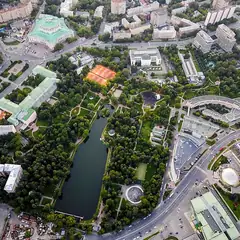
- Екатерининский парк · Парк · м. Достоевская
- 7 минут пешкомВ темноте?! · Ресторан
Неспешный круг у пруда в Екатерининском парке, а через семь минут пешком — ужин в полной темноте под живую музыку: необычно и сближает. Столик — только по записи.
Открыть план: Ужин в полной темнотеПозвать сюда: Ужин в полной темноте
Фото: Gordon01, CC0 · Wikimedia Commons
- Коломенское · Музей-заповедник · м. Коломенская
В Коломенском — Голосов овраг с камнями-валунами и байками про туман, в котором «теряется время». Осенью тут особенно атмосферно.
Открыть план: Голосов овраг и легендыПозвать сюда: Голосов овраг и легенды
Фото: Ludvig14, CC BY-SA 4.0 · Wikimedia Commons


Места для Хэллоуина 24 из 37
пр. Андропова, 39
Холмы над рекой, белая церковь Вознесения и деревянный дворец царя Алексея Михайловича.
Подробнее и маршрут: КоломенскоеПозвать сюда: Коломенское
Фото: Ludvig14, CC BY-SA 4.0 · Wikimedia Commons
Большая Садовая ул., 10
«Нехорошая квартира» №50, где жил Булгаков. Вт–вс, по четвергам до 21:00.
Подробнее и маршрут: Музей БулгаковаПозвать сюда: Музей Булгакова
Фото: Usolt, CC BY 3.0 · Wikimedia Commons
5-й Котельнический пер., 11
Секретный бункер холодной войны на глубине 65 метров у Таганки: экскурсии и ресторан.
Подробнее и маршрут: Бункер-42Позвать сюда: Бункер-42
Фото: Fastboy, CC BY-SA 3.0 · Wikimedia Commons
Никитский бул., 7А
Усадьба на Никитском бульваре, где Гоголь сжёг второй том «Мёртвых душ».
Подробнее и маршрут: Дом ГоголяПозвать сюда: Дом Гоголя
Фото: Shakko, CC BY-SA 4.0 · Wikimedia Commons
Профсоюзная ул., 123
Скелеты динозавров и древних животных в здании-«крепости» у Тёплого Стана.
Подробнее и маршрут: Палеонтологический музейПозвать сюда: Палеонтологический музей
Фото: MikSed, CC BY-SA 4.0 · Wikimedia Commons
Ленинградский просп., 40
Краснокирпичный дворец в псевдоготике у «Динамо»; внутрь — с экскурсией.
Подробнее и маршрут: Петровский путевой дворецПозвать сюда: Петровский путевой дворец
Фото: WM wm WM, CC BY-SA 4.0 · Wikimedia Commons
ул. Малая Грузинская, 27/13
Неоготический собор на Малой Грузинской; по вечерам здесь органные концерты.
Подробнее и маршрут: Собор Непорочного ЗачатияПозвать сюда: Собор Непорочного Зачатия
Фото: A.Savin, Free Art License · Wikimedia Commons
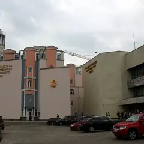
ул. Вавилова, 57
Музей эволюции с чучелами животных со всего мира и интерактивными залами.
Подробнее и маршрут: Дарвиновский музейПозвать сюда: Дарвиновский музей
Фото: Cybersky, CC BY-SA 3.0 · Wikimedia Commons
Большая Никитская ул., 6
Старинный музей на Большой Никитской: скелеты, чучела и коллекции насекомых.
Подробнее и маршрут: Зоологический музей МГУПозвать сюда: Зоологический музей МГУ
Фото: A.Savin, Free Art License · Wikimedia Commons
Крутицкая ул., 8
Тихие дворики, изразцовый теремок и старинные стены — машина времени посреди города. Вход свободный, особенно атмосферно в сумерках.
Подробнее и маршрут: Крутицкое подворьеПозвать сюда: Крутицкое подворье
Фото: Дмитрий Мозжухин, CC BY 3.0 · Wikimedia Commons
Красноказарменная ул., 1
Старинный регулярный парк с прудами и гротом — одно из самых тихих мест в городе.
Подробнее и маршрут: Лефортовский паркПозвать сюда: Лефортовский парк
Фото: A.Savin, CC BY-SA 3.0 · Wikimedia Commons
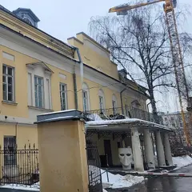
Дашков пер., 5
Новое
Иммерсивный театр в особняке 1827 года: зрители сами бродят по всему дому и выбирают, за кем следить. В 2026-м вернулись «Вернувшиеся» по «Привидениям» Ибсена, 18+.
Подробнее и маршрут: Особняк Дашков 5Позвать сюда: Особняк Дашков 5
Фото: Svetlov Artem, CC BY 4.0 · Wikimedia Commons
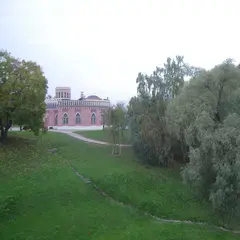
ул. Дольская, 1
Готический дворец, пруды и мосты. Красиво в любое время года, особенно на фото.
Подробнее и маршрут: ЦарицыноПозвать сюда: Царицыно
Фото: Корзун Андрей, CC BY-SA 3.0 · Wikimedia Commons
Октябрьская ул., 2
Ужин в полной темноте: обслуживают незрячие официанты, играет живая музыка. Только по записи, сеанс ~2 часа.
Подробнее и маршрут: В темноте?!Позвать сюда: В темноте?!
Фото: Олег Черкасский, CC BY-SA 4.0 · Wikimedia Commons
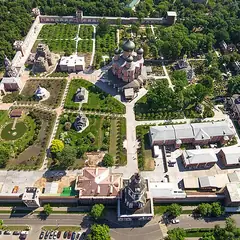
Донская пл., 1
Тихий монастырь за высокими стенами с некрополем и старым садом.
Подробнее и маршрут: Донской монастырьПозвать сюда: Донской монастырь
Фото: mos.ru, CC BY 4.0 · Wikimedia Commons
Чистопрудный бул., 10, стр. 1
Одна из старейших сетей квестов в Москве. Комнату и время выбирайте на сайте — есть с актёрами и без.
Подробнее и маршрут: КлаустрофобияПозвать сюда: Клаустрофобия
Кубанская ул., 10/107
Новое
Старое поместье и учтивый дворецкий, который оказывается не так прост. Нелинейный перформанс с актёрами: правильного выбора нет, всё решаете вы.
ул. Бориса Галушкина, 17
Новое
Одни из самых популярных хоррор-квестов Москвы: неоновая «Ночь в Токио», «Пожиратель душ», «Король шутов». Сильные актёры и декорации, от 6500 ₽.
1-я Владимирская ул., 12, корп. 1
КруглосуточноНовое
Круглосуточный квест-центр у «Перова»: жёсткий хоррор «Антихрист» с сильными актёрами и спокойные загадки вроде «Кода да Винчи». Страх можно подкрутить на месте.
Подробнее и маршрут: Компонент КвестПозвать сюда: Компонент Квест
ул. Покровка, 40Б (подъезд 2)
Новое
Камерный театр в усадьбе Голицыных-Давыдовых, где зрители втянуты в действие. Перед «Вием» — фуршет и бокал игристого. Билеты от 2800 ₽.
Черницынский пр., 3, стр. 1
Новое
Хоррор-квесты в Гольянове: «Ассистенты морга» и «Объект 1975» с давящей атмосферой и проработанными локациями. Без контакта с актёрами, но страшно всерьёз.
ул. Покровка
Загадочный гастрономический особняк недалеко от Чистых прудов — хороший финал прогулки по бульварам.
ул. Трофимова, 2/1
Новое
Иммерсивный квест в «психиатрической больнице» у «Автозаводской»: актёр-пациент бьётся о стены и прячется на шкафу. Только для крепких нервов.
1-й Угрешский пр., 8
Новое
Страшные квесты-перформансы у МЦК «Угрешская», например «Изгоняющий дьявола». Визжать будете всей компанией, а после игры актёры — сама забота.
Подробнее и маршрут: Hooligan GroupПозвать сюда: Hooligan Group

Как позвать
- Выбери план, место или событие — в карточке адрес, цены и маршрут в Яндекс Картах.
- Нажми «Позвать сюда» — соберётся приглашение-игра для свидания или голосование для компании.
- Отправь ссылку в любой мессенджер: тебе ответят, а компания отметит, куда и когда может. Бесплатно и без регистрации.